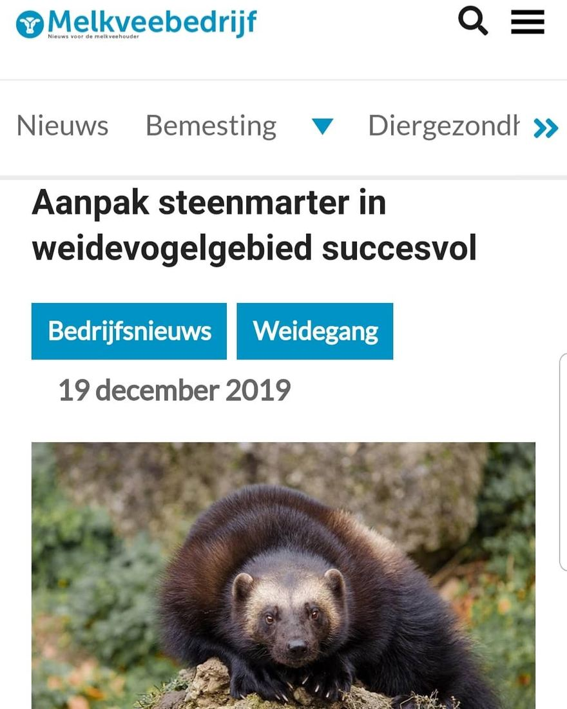

Veelvraat, geen steenmarter
20 december 2020 · Melkveebedrijf
- Op de foto
- Veelvraat
- Het ging over
- Steenmarter

Oei! @melkveebedrijf_nl maakt er een potje van. Moge toch duidelijk zijn dat dit geen Steenmarter maar een Veelvraat is.
Gelukkig is de aanpak dan wel succesvol (als het tegen steenmarters is 😉)
https://www.melkveebedrijf.nl/veevoer-melkvee/weidegang/aanpak-steenmarter-in-weidevogelgebied-succesvol/
Ingestuurd door @wesveenbrink_photography , waarvoor dank!